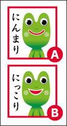
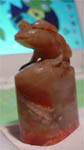
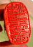
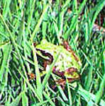

かえる飴で気分は最高！【福岡発げこげこ大王直筆】梅雨が続く日々。天神地下街を歩いていると、ぴのこさんとばったりと出会い、そこにはカエル飴がありました。巨大な飴なので、職場で食べるにはちょうどいいぞおお。禁煙する職場などでは、たばこ代わりにカエル飴をなめようではないかあああああ。 ちなみに、このカエル飴は、ふだんは、ペロペロペロペロ人間の方が飴をなめているのですが、１０回に一度くらいは、カエル飴の中からベロが伸びて来て、食べている人間のほうをベロオオオオンとなめてくれるらしいぞおおお。
 カエルサボテン九期七月分は１０匹だあああ！発売中！【ケロ天市場】きっと今回が最後になるかもしれない九期発売が先月から始まっていますが、今回は七月分の１０匹です。九月以降の販売予定はないので、ケロ天市場で『カエルサボテン』をゲットしておきましょう。にんまり顔とにっこり顔があるんで、どちらでも選べます。
 全国かえる奉賛会公印はこれだあああ！【全国かえる奉賛会】大王が中華民国台湾省で購入してきた『かえる印鑑』が、このたび、全国かえる奉賛会公印として、銀行口座に使用することにしたぞおおお。
 大王は、地元の福岡銀行窓口にでかけて、『あのーこのカエルの印鑑を印鑑として登録したいんぢゃが、いかがなもんであろうかああ？』と質問したところ、『押すと欄外にはみ出てしまうので、上司に相談してきます』と待つこと五分。銀行上司の了解のもと、はれて、奉賛会公印として銀行に登録できたのであるうううう。今度から、現金を決済するときは、この公印でばばああああんと押すぞおおおおお。福岡銀行天神町支店2266718が新しい口座番号であるうう。
なお陰影は『蛙大王七世』と書いてあります。
 田植えは重労働なれどかえる様に会える【千葉発ケロリカ同志記者】本日は、田植えの際、わたくしの前にお姿を現わされたかえる様の画像をお送り致します。わたくしの夫は、千葉の農家の長男で御座居ます。長男の嫁のわたくしも、毎年田圃仕事に駆り出されるのですが、辛い農作業を続けられるのも、そこにかえる様がいらっしゃるからで御座居ます。この日は天気も良う御座居ました。田圃のあちらこちらにかえる様をお見掛け致しましたが、なかでも足元の苗箱にちょこんと飛んでいらしたアマガエル様の横顔が凛々しく、勿体ないことでは御座居ますが、その御尊顔を写真に収めさせて戴きました。 刈入れまでの約４カ月、稲がかえる様に見守られて順調に育つことを願うばかりで御座居ます。
【全国かえる奉賛会】田圃にはカエルですよねえ。カエルがいてこそ、瑞穂の国日本ではないかあああああ。
|
メールマガジン登録
メールマガジン解除
Powered by


かえる古新聞過去に取り上げた記事を見出し付きで一覧したい人は、ここをクリック◆創刊号を見る◆先週号を見る◆話題の号を見る◆かえる新聞の昔を読む
|
私も入っています。。全国かえる奉賛会
大王様に会うには、このバナーをクリック。ずっと奥に写真館があるぞ。全国かえる奉賛会に入会するには、自分のホームページのどこかに、下の部分を追加するとバナーがリンク付きで表示されるぞ。どんどん入会しましょー |


|